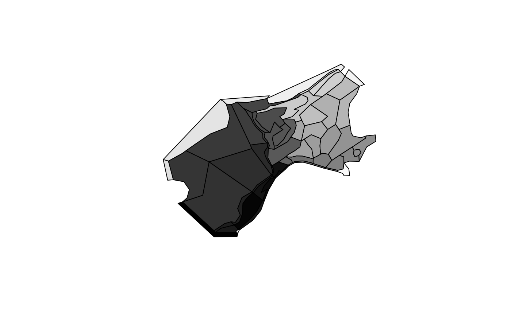
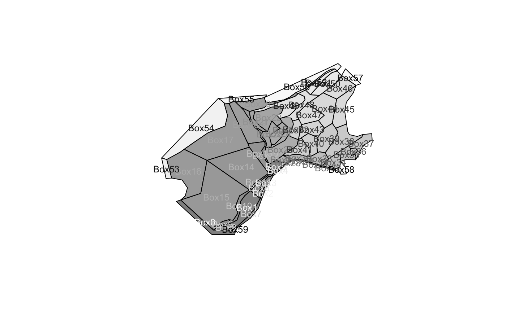
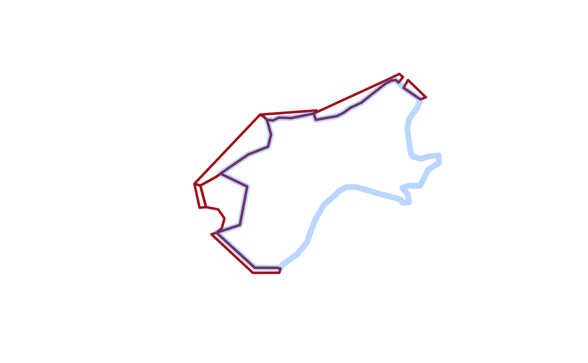
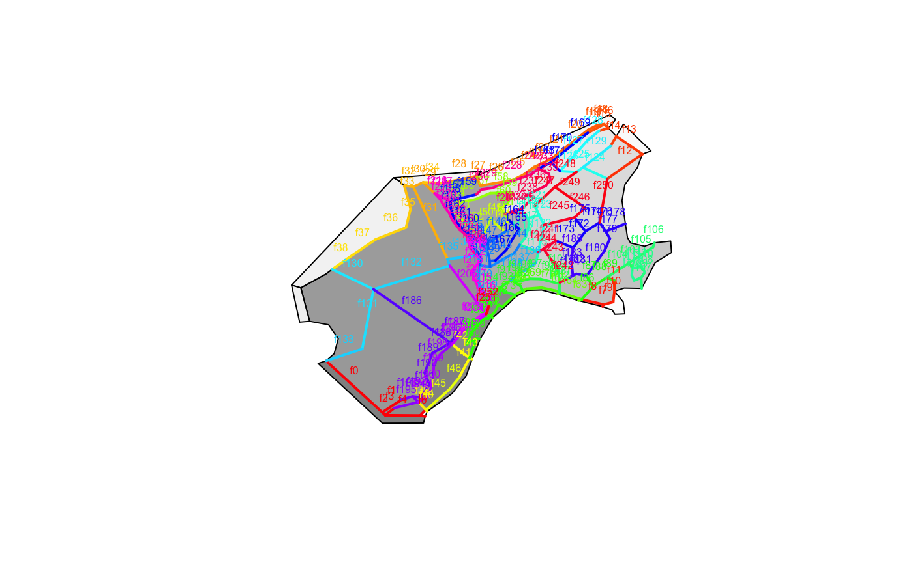
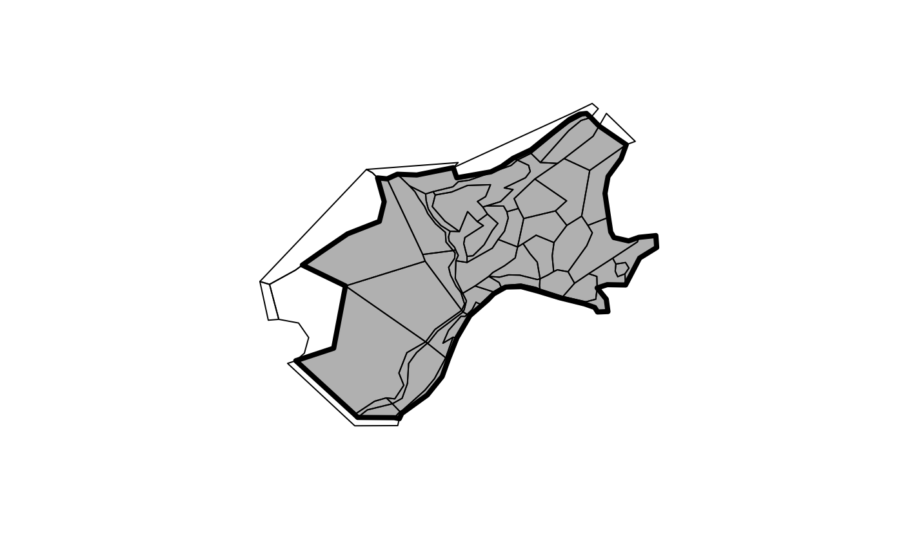

vignettes/BGM_Spatial.Rmd
BGM_Spatial.RmdRead in an example .bgm file with bgmfile, and plot it as box-polygons.
library(rbgm) library(bgmfiles) ## example files ## example data set in package fname <- bgmfiles(pattern = "Nordic")[1L] bgm <- bgmfile(fname) plot(boxSpatial(bgm), col = grey(seq(0, 1, length = nrow(bgm$boxes))))

The function bgmfile returns a generic list structure of tables, which currently includes the following. More on these later.
print(names(bgm)) #> [1] "vertices" "facesXverts" "faces" "facesXboxes" #> [5] "boxesXverts" "boxes" "boundaryvertices" "extra"
There are functions for converting from the raw .bgm data structures to Spatial objects, as defined in the sp package. (Spatial objects are formal GIS-like data that store a table of attribute data against a set of matching polygons, lines or points.)
boxSpatial converts to a SpatialPolygonsDataFrame, with a table of attributes relevant to the boxesfaceSpatial converts to a SpatialLinesDataFrame, with attributes for the faces (straight line edges that define box boundaries)nodeSpatial converts to a `SpatialPointsDataFrame, with attributes for the unique vertices in the modelpointSpatial converts to a SpatialPointsDataFrame, with attributes for all instances of the vertices in the model (faces share vertices)boundarySpatial converts just the boundary path to SpatialPolygonsDataFrame
From these conversions we can export to GIS formats such as GeoPackage.
It’s important to note that the Spatial objects cannot store the full topological and attribute information present in the .bgm, so these are convenience converters that are one-way. We can generate .bgm from these objects, but it cannot be stored in just one Spatial object.
These converter functions provide fully-functional objects with complete coordinate system metadata, that we can subset, interrogate and plot.
(spdf <- boxSpatial(bgm)) #> class : SpatialPolygonsDataFrame #> features : 60 #> extent : -1411988, 1849768, 3463169, 6117110 (xmin, xmax, ymin, ymax) #> crs : +proj=aea +lat_1=43 +lat_2=62 +lat_0=30 +lon_0=10 +x_0=0 +y_0=0 +ellps=intl +units=m +no_defs #> variables : 11 #> names : label, nconn, botz, area, vertmix, horizmix, insideX, insideY, .bx0, boundary, box_id #> min values : Box0, 0, -3255, 1317077441.6413, 1e-04, 1, -1334344.11869758, 3543086.16022841, 0, 0, 0 #> max values : Box9, 21, 0, 525138111862.757, 0.001, 2, 1668909.2842076, 5889207.4351272, 59, 1, 59 (sldf <- faceSpatial(bgm)) #> class : SpatialLinesDataFrame #> features : 253 #> extent : -1116549, 1703682, 3521699, 6035115 (xmin, xmax, ymin, ymax) #> crs : +proj=aea +lat_1=43 +lat_2=62 +lat_0=30 +lon_0=10 +x_0=0 +y_0=0 +ellps=intl +units=m +no_defs #> variables : 7 #> names : cosine, sine, left, right, length, .fx0, label #> min values : -0.996668837654093, -0.99648270316708, 0, 1, 711.256615760743, 0, face0 #> max values : 0.999976969046993, 0.999666398127426, 59, 59, 803970.852887957, 252, face99
Subset based on attribute
subset(spdf, horizmix == 0, select = label) #> class : SpatialPolygonsDataFrame #> features : 0 #> crs : +proj=aea +lat_1=43 +lat_2=62 +lat_0=30 +lon_0=10 +x_0=0 +y_0=0 +ellps=intl +units=m +no_defs #> variables : 1 #> names : label plot(boxSpatial(bgm), col = grey(seq(0, 1, length = nrow(bgm$boxes)), alpha = 0.5)) text(coordinates(spdf), labels = spdf$label, col = grey(seq(1, 0, length = nrow(bgm$boxes))), cex = 0.8)

For illustration isolate boxes that are outside the boundary.
## subset the boundary boxes plot(subset(spdf, boundary), border = "firebrick", lwd = 3) ## or just get a single boundary for the inner plot(boundarySpatial(bgm), border = "#1E90FF4C", lwd = 7, add = TRUE)

Plot the boxes and then label the faces.
plot(boxSpatial(bgm), col = grey(seq(0, 1, length = nrow(bgm$boxes)), alpha = 0.5)) plot(sldf, col = rainbow(nrow(sldf)), lwd = 2, add = TRUE) text(do.call(rbind, lapply(coordinates(sldf), function(x) apply(x[[1]], 2, mean))), labels = gsub("ace", "", sldf$label), cex = 0.5, col = rainbow(nrow(sldf)), pos = 3)

Obtain the boundary polygon and plot.
plot(boundarySpatial(bgm), lwd = 4, col = "grey") plot(boxSpatial(bgm), add = TRUE)

The BGM format and usage is described at the Atlantis site. https://research.csiro.au/atlantis/